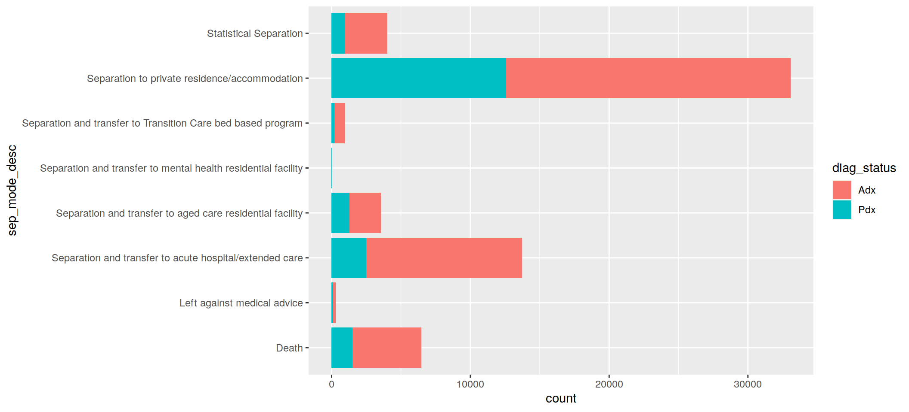
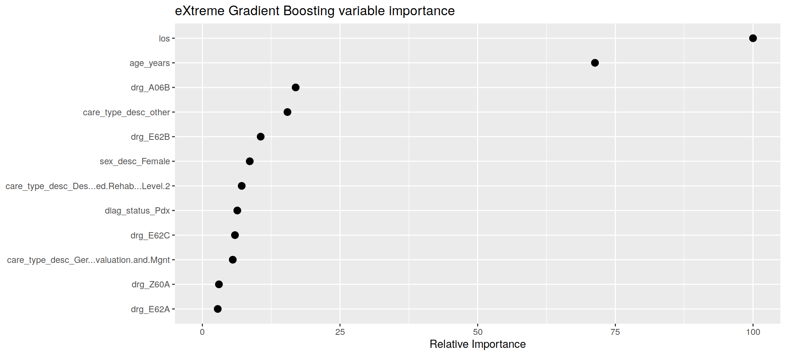
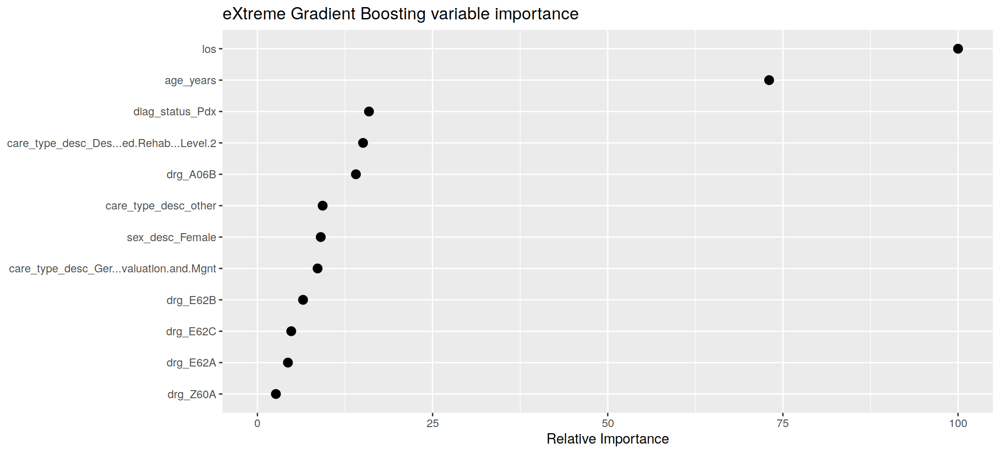

Tutorial 6 - Machine Learning
Last updated: 2019-05-30
Checks: 5 1
Knit directory: tutorials_workflowr/
This reproducible R Markdown analysis was created with workflowr (version 1.3.0.9000). The Checks tab describes the reproducibility checks that were applied when the results were created. The Past versions tab lists the development history.
Great! Since the R Markdown file has been committed to the Git repository, you know the exact version of the code that produced these results.
Great job! The global environment was empty. Objects defined in the global environment can affect the analysis in your R Markdown file in unknown ways. For reproduciblity it’s best to always run the code in an empty environment.
The command set.seed(20190513) was run prior to running the code in the R Markdown file. Setting a seed ensures that any results that rely on randomness, e.g. subsampling or permutations, are reproducible.
Nice! There were no cached chunks for this analysis, so you can be confident that you successfully produced the results during this run.
Great! You are using Git for version control. Tracking code development and connecting the code version to the results is critical for reproducibility. The version displayed above was the version of the Git repository at the time these results were generated.
Note that you need to be careful to ensure that all relevant files for the analysis have been committed to Git prior to generating the results (you can use wflow_publish or wflow_git_commit). workflowr only checks the R Markdown file, but you know if there are other scripts or data files that it depends on. Below is the status of the Git repository when the results were generated:
Ignored files:
Ignored: code/analysis/
Note that any generated files, e.g. HTML, png, CSS, etc., are not included in this status report because it is ok for generated content to have uncommitted changes.
These are the previous versions of the R Markdown and HTML files. If you’ve configured a remote Git repository (see ?wflow_git_remote), click on the hyperlinks in the table below to view them.
| File | Version | Author | Date | Message |
|---|---|---|---|---|
| Rmd | fc4e705 | Dennis Wollersheim | 2019-05-30 | wflow_publish(“analysis/tutorial6.Rmd”) |
| Rmd | eae8a20 | Dennis Wollersheim | 2019-05-29 | inprogress |
Machine Learning in R
The question: If you enter hospital with a PD of Pneumonia, what factors determine if you will survive?
Load Libraries
library(tidyverse)── Attaching packages ────────────────────────────────── tidyverse 1.2.1 ──✔ ggplot2 3.1.1 ✔ purrr 0.3.2
✔ tibble 2.1.1 ✔ dplyr 0.8.1
✔ tidyr 0.8.3 ✔ stringr 1.4.0
✔ readr 1.3.1 ✔ forcats 0.4.0── Conflicts ───────────────────────────────────── tidyverse_conflicts() ──
✖ dplyr::filter() masks stats::filter()
✖ dplyr::lag() masks stats::lag()library("RPostgreSQL")Loading required package: DBIlibrary(healthcareai)healthcareai version 2.3.0
Please visit https://docs.healthcare.ai for full documentation and vignettes. Join the community at https://healthcare-ai.slack.comGet data from SQL
con <- dbConnect(dbDriver("PostgreSQL"),
dbname = 'vaed_full',
host = "himsql7.latrobe.edu.au", port = 5432,
user = "dewollershei-test", password = "healthGuru")
#
query_diag <- "
select position, diag_code, admission_id, age_years, los,
sameday_id, drg, sex_desc, diag_short_desc, sep_mode_desc, care_type_desc,
sep_mode_id
from admission JOIN sex using (sex_id)
join admission_diagnosis using (admission_id)
join diagnosis_desc using (diag_code)
JOIN separation_mode USING (sep_mode_id)
JOIN care_type USING (care_type_id)
WHERE diag_short_desc like 'Pneumonia unspecified'
"
#
pneumonia_diag <- dbGetQuery( con, query_diag ) %>%
as_tibble() %>%
mutate( diag_status = ifelse( position==1, 'Pdx','Adx'))
#
did_disconnect <- dbDisconnect( con )Can we predict separation mode for pneumonia unspecified patients?
Given our 7517 pneumonia unspecified patients, can we predict their separation mode? First, what does separtion mode look like?
pneumonia_diag %>%
ggplot( aes( sep_mode_desc, fill=diag_status)) +
geom_bar( ) 
pneumonia_diag %>%
count( sep_mode_id, sep_mode_desc)# A tibble: 8 x 3
sep_mode_id sep_mode_desc n
<chr> <chr> <int>
1 A Separation and transfer to mental health residential f… 3
2 B Separation and transfer to Transition Care bed based p… 191
3 D Death 1674
4 H Separation to private residence/accommodation 13338
5 N Separation and transfer to aged care residential facil… 1244
6 S Statistical Separation 853
7 T Separation and transfer to acute hospital/extended care 3341
8 Z Left against medical advice 126Let’s separate out the people who died
pneumonia_diag_did_die <-
pneumonia_diag %>%
mutate( did_die = ifelse( sep_mode_id=='D', 'Y', 'N')) %>%
select( -position, -diag_code, -diag_short_desc, -sep_mode_id, -sep_mode_desc )
pneumonia_diag_did_die %>%
distinct( care_type_desc )# A tibble: 13 x 1
care_type_desc
<chr>
1 Other care (Acute) inc Qualified Newborn
2 Palliative Care Program
3 Geriatric Evaluation and Mgnt
4 Designated Rehab - Level 2
5 Acute Adult Mental Health Service
6 Acute Aged Persons Mental Health Service (APMH)
7 Alcohol and Drug Program
8 Nursing Home Type (NHT)/Non-Acute
9 Restorative Care Off site
10 Designated Rehab - Level 1
11 Restorative Care On site
12 Acute Specialist Mental Health Service
13 Unqualified Newborn Machine learning
Can we use machine learning to determine the likelihood of death, given other factors?
First, we split the dataset into train and test data.
split_data <- split_train_test(d=pneumonia_diag_did_die, outcome=did_die, percent_train=.8, seed=101001)
summary(split_data) Length Class Mode
train 9 tbl_df list
test 9 tbl_df listTraining a prediction model
Then, we train the model on the training subset, held in the train component of the split_data variable split_data$train.
I exclude admission_id because it is no use to try to train on a unique id column, because it holds no information. The outcome variable is the one we are trying to predict, in this case, did_die. We also set tune=F so that the process finishes more quickly, but if you have time, setting tune=T will give you a more accurate model.
machine_learn( split_data$train, admission_id, outcome=did_die, tune=F) %>%
{ . } -> modelsTraining new data prep recipe...Variable(s) ignored in prep_data won't be used to tune models: admission_id
did_die looks categorical, so training classification algorithms.
After data processing, models are being trained on 21 features with 16,617 observations.
Based on n_folds = 5 and hyperparameter settings, the following number of models will be trained: 5 rf's, 5 xgb's, and 50 glm's Training at fixed values: Random ForestTraining at fixed values: eXtreme Gradient BoostingTraining at fixed values: glmnet
*** Models successfully trained. The model object contains the training data minus ignored ID columns. ***
*** If there was PHI in training data, normal PHI protocols apply to the model object. ***modelsAlgorithms Trained: Random Forest, eXtreme Gradient Boosting, and glmnet
Model Name: did_die
Target: did_die
Class: Classification
Performance Metric: AUROC
Number of Observations: 16617
Number of Features: 21
Models Trained: 2019-05-30 16:33:46
Models have not been tuned. Performance estimated via 5-fold cross validation at fixed hyperparameter values.
Best model: eXtreme Gradient Boosting
AUPR = 0.27, AUROC = 0.75
User-selected hyperparameter values:
nrounds = 50
max_depth = 6
eta = 0.3
gamma = 0
colsample_bytree = 0.8
min_child_weight = 1
subsample = 0.7 Whew, we have calculated the model. Actually, we have calculated many models, and had a contest to see which was the best predictor. The 3 models types are Random Forest, eXtreme Gradient Boosting, and glmnet. The default model scoring criteria used is called AUROC, short for area under the ROC curve, and it shows that our model had a 75% success rate at predicting death. ur
summary(models)Models trained: 2019-05-30 16:33:46
Models have not been tuned. Performance estimated via 5-fold cross validation at fixed hyperparameter values.
Best algorithm: eXtreme Gradient Boosting with AUPR = 0.27, AUROC = 0.75
Out-of-fold performance of all trained models:
$`Random Forest`
# A tibble: 1 x 9
mtry splitrule min.node.size AUROC Sens Spec ROCSD SensSD SpecSD
<dbl> <chr> <int> <dbl> <dbl> <dbl> <dbl> <dbl> <dbl>
1 4 extratrees 1 0.750 0.0746 0.999 0.0121 0.0209 0.000884
$`eXtreme Gradient Boosting`
# A tibble: 1 x 13
eta gamma max_depth subsample colsample_bytree min_child_weight nrounds
<dbl> <dbl> <dbl> <dbl> <dbl> <dbl> <dbl>
1 0.3 0 6 0.7 0.8 1 50
# … with 6 more variables: AUROC <dbl>, Sens <dbl>, Spec <dbl>,
# ROCSD <dbl>, SensSD <dbl>, SpecSD <dbl>
$glmnet
# A tibble: 10 x 8
alpha lambda AUROC Sens Spec ROCSD SensSD SpecSD
<dbl> <dbl> <dbl> <dbl> <dbl> <dbl> <dbl> <dbl>
1 1 0.000977 0.751 0.102 0.995 0.0139 0.0235 0.000788
2 1 0.00266 0.748 0.101 0.995 0.0129 0.0249 0.000847
3 1 0.00723 0.742 0.1 0.995 0.0115 0.0248 0.00102
4 1 0.0197 0.707 0.00746 1.000 0.0181 0.00914 0.000179
5 1 0.0536 0.557 0 1 0.00982 0 0
6 1 8 0.5 0 1 0 0 0
7 1 2.94 0.5 0 1 0 0 0
8 1 1.08 0.5 0 1 0 0 0
9 1 0.397 0.5 0 1 0 0 0
10 1 0.146 0.5 0 1 0 0 0 evaluate(models) AUPR AUROC
0.2711871 0.7528373 Visualising a prediction model
There are various ways to visualise the results. THe first is to look at what predictions would be made for the ‘held back’ training data. predict does this, by adding a columm with the predicted did_die value, called predicted_did_die. This contains the probability that this prediction will be Y.
predictions <-
predict(models, newdata=split_data$test, outcome_groups=T) Warning in ready_with_prep(object, newdata, mi): The following variables(s) had the following value(s) in predict that were not observed in training.
drg: A06D, B73Z, H01B, I06Z, I23Z, J01A, K06A, M01A, M62Z, N60BPrepping data based on provided recipepredictions"predicted_did_die" predicted by eXtreme Gradient Boosting last trained: 2019-05-30 16:33:46
Performance in training: AUROC = 0.75# A tibble: 4,153 x 11
did_die predicted_did_d… predicted_group admission_id age_years los
* <fct> <dbl> <fct> <int> <int> <int>
1 N 0.00547 N 21000617 5 4
2 N 0.000191 N 21000865 5 2
3 N 0.139 N 21001870 77 2
4 N 0.104 N 21001966 85 8
5 Y 0.806 Y 21001999 69 3
6 N 0.0755 N 21002340 89 5
7 N 0.186 N 21002345 79 22
8 N 0.117 N 21002515 85 1
9 N 0.154 N 21003344 91 23
10 Y 0.0763 N 21003346 60 17
# … with 4,143 more rows, and 5 more variables: sameday_id <chr>,
# drg <chr>, sex_desc <chr>, care_type_desc <chr>, diag_status <chr>We can plot the predictions.
plot( predictions )
How does the model work?
We first look and see which variables are important in the model.
get_variable_importance(models) %>%
plot()
Age and LOS are the most important variables. Another way to explore the model is look at what happens to the prediction as you play around with the variables. explore does this. By default, it explores the effect of changing the two most important variables in the model, in this case, age_years and los.
explore(models) %>%
plot()With 4 varying features and n_use = 2, using median to aggregate predicted outcomes across care_type_desc and drg. You could turn `n_use` up to see the impact of more features.
We can also explore what happens as we explore other combinations of variables, in this case, age and care_type_desc.
explore(models, vary=c('age_years', 'care_type_desc')) %>%
plot()
Exercises
- Extract another dataset, for example, number of procedures performed, and if the patient had physiotherapy. Does this selection of data improve the model?
- What is a plausible reason why a longer LOS leads to improved survival?
- If we had enough data, we could predict ICD codes. What would the effect of this on the hospital workforce?
Multiclass prediction
The following code selects out the top 3 seperation modes, and excludes the other seperation modes. See if you can predict one of 3 seperation modes. Does that improve accuracy?
top3 <-
pneumonia_diag %>%
count( sep_mode_id, sep_mode_desc, sort=TRUE) %>%
head(3)
pneumonia_diag_top3 <-
pneumonia_diag %>%
inner_join( top3 ) %>%
select( -position, -diag_code, -diag_short_desc, -sep_mode_desc, -n )Joining, by = c("sep_mode_desc", "sep_mode_id")split_data <- split_train_test(d=pneumonia_diag_top3 , outcome=sep_mode_id, percent_train=.8, seed=101001)
machine_learn( split_data$train, admission_id, outcome=sep_mode_id, tune=F) %>%
{ . } -> modelsTraining new data prep recipe...Variable(s) ignored in prep_data won't be used to tune models: admission_id
sep_mode_id looks multiclass, so training multiclass algorithms.
After data processing, models are being trained on 21 features with 14,684 observations.
Based on n_folds = 5 and hyperparameter settings, the following number of models will be trained: 5 rf's, 5 xgb's, and 50 glm's Training at fixed values: Random ForestTraining at fixed values: eXtreme Gradient BoostingTraining at fixed values: glmnet
*** Models successfully trained. The model object contains the training data minus ignored ID columns. ***
*** If there was PHI in training data, normal PHI protocols apply to the model object. ***modelsAlgorithms Trained: Random Forest, eXtreme Gradient Boosting, and glmnet
Model Name: sep_mode_id
Target: sep_mode_id
Class: Multiclass
Performance Metric: Accuracy
Number of Observations: 14684
Number of Features: 21
Number of Outcome Classes: 3
Models Trained: 2019-05-30 16:34:18
Models have not been tuned. Performance estimated via 5-fold cross validation at fixed hyperparameter values.
Best model: eXtreme Gradient Boosting
Accuracy = 0.74, Kappa = 0.21
User-selected hyperparameter values:
nrounds = 50
max_depth = 6
eta = 0.3
gamma = 0
colsample_bytree = 0.8
min_child_weight = 1
subsample = 0.7 get_variable_importance(models) %>%
plot()